(back to all presentations)Table of contents |
Author: Johannes Buchner Homepage: http://astrost.at/istics/ Further information: Galaxy Gas as Obscurer: GRBs x-ray their host galaxyAbstract: The column density distribution of galaxies at z=0.5-3 from GRBs and implications for obscured AGN 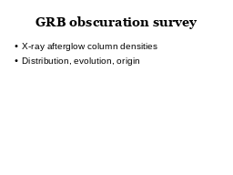 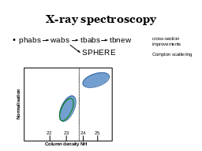 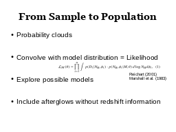
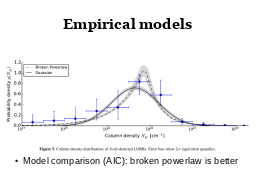
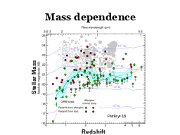
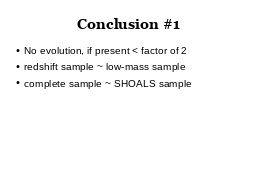
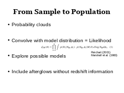
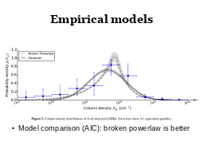
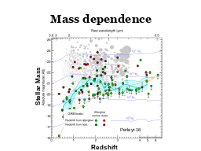
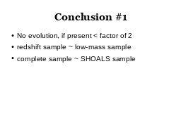
 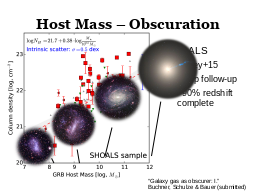
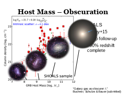
 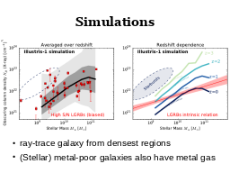
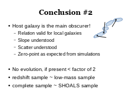
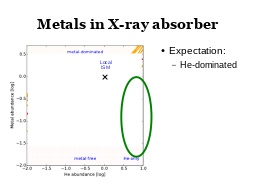
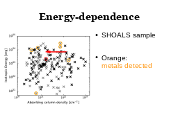
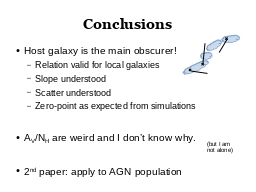
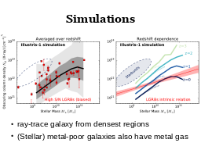
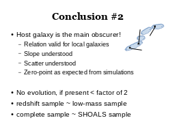
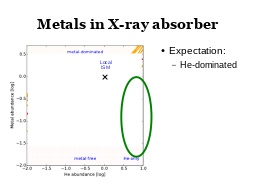
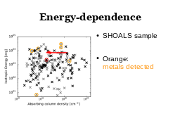
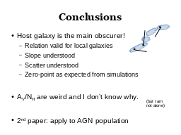
|